QGIS 4
What Changes for Users?
Release overview and practical implications

Why QGIS 4?
Why now?
- Qt5 End-of-Life: May 2025: security and stability risk
- Qt6 brings: modernization, bug fixes, future-proof architecture
- Goal: long-term maintainability and stability for QGIS
Visible Change
New Start Screen
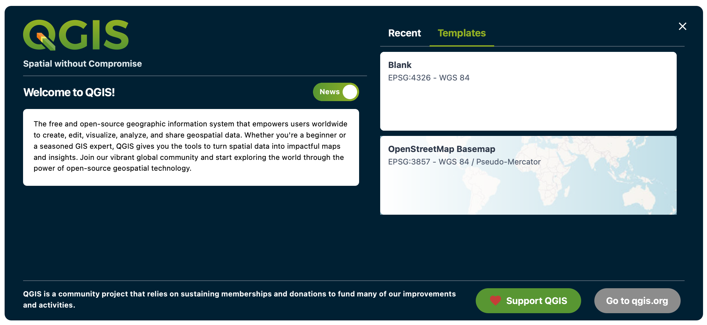
More intuitive first steps
3D
Billboard annotations
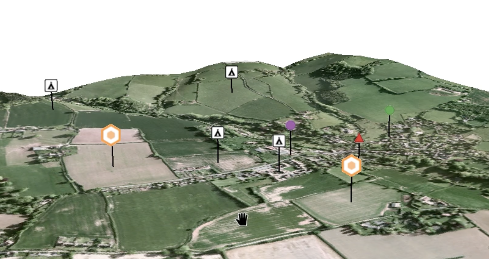
More to be presented by Martin Dobias later
Layout
Pie Chart Plot Type
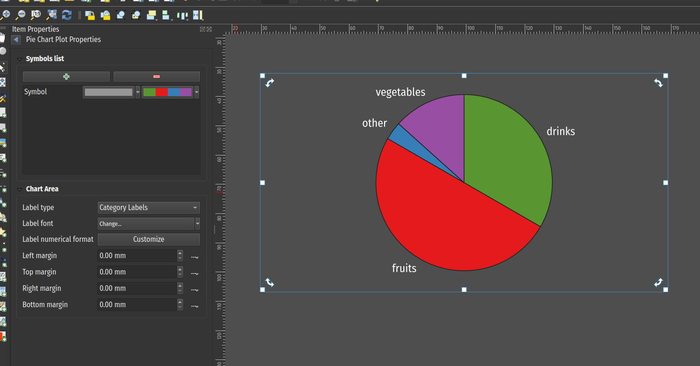
Elevation Profile
SwissLocator / SwissALTI3D
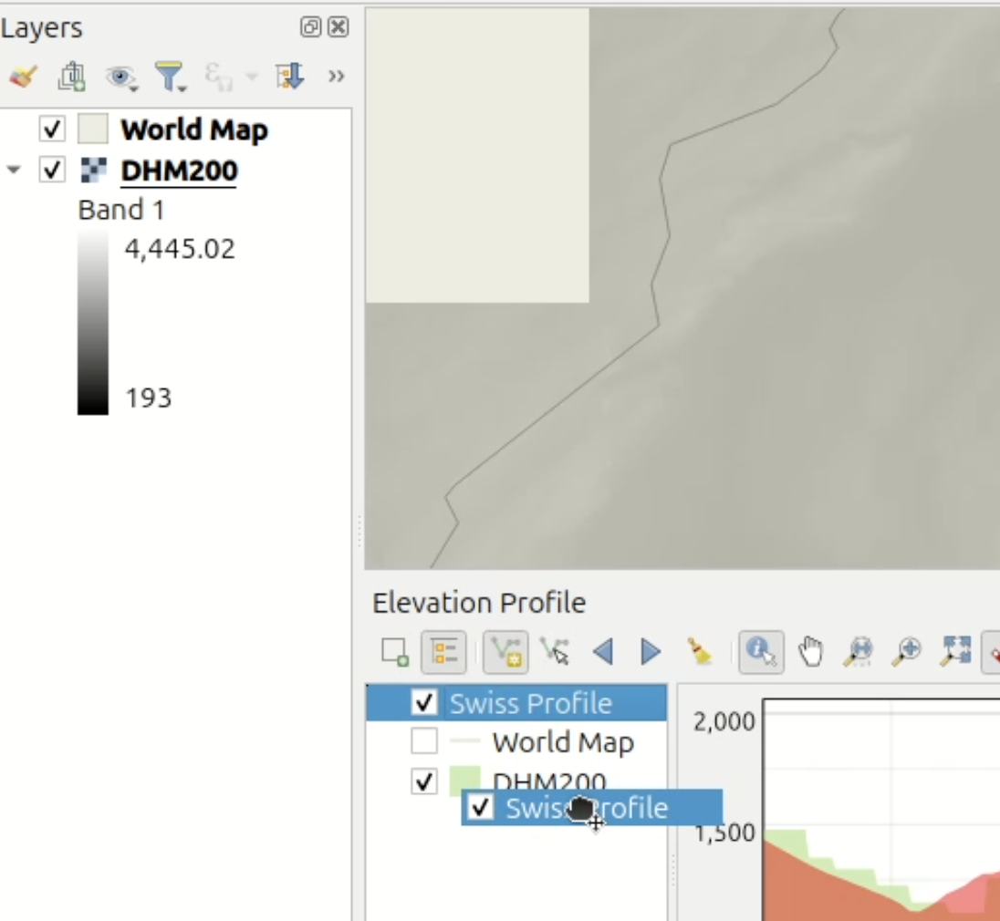
… and much
more
- Processing: Flow execution, non blocking modeller
- Data Analysis: PyQGIS no offers
as_geopandas()method - 3D Calculations: SFCGAL integration
- …
Plugins
in QGIS 4
- Already >800 QGIS-4-compatible plugins (of 3500) available
- Test your plugins and help get them ported
- Some old plugins might not get an update
- Old workarounds obsolete: stable XML by default (hello git 👋)
- Themes as Plugins: new flexibility for UI customization
Migrating
Plugins
- QGIS ships with a helper tool to migrate plugins
pyqt5topyqt6 - QGIS 4 plugin checks
pyqgis4-checker
Migrating Projects and Profiles
What Just Works
- ✅ QGIS 3 projects can be opened in QGIS 4
- ✅ QGIS 3 user profiles will be updated to QGIS 4 profiles
Migrating Projects
What Doesn’t Just Work
- ❌ Backward compatibility: QGIS 4 projects do not open properly in QGIS 3
- ❌ Backward compatibility: QGIS 4 user profiles are not compatible with QGIS 3
- ❌ Python customizations: macros, actions, custom scripts, processing scripts often need updates
The HTML story
Browser changes
- QtWebKit is no longer supported
- QtWebEngine: is the new technology
- HTML print layouts: will not just work, especially text, updates are still ongoing and may only land in QGIS 4.4
- Plugins: which use QtWebKit need to be adjusted
Practical
Migration Strategy
- 🔄 Separate project files and profiles: maintain QGIS 3 and QGIS 4 versions in parallel
- 🔧 Server before desktop: QGIS 4 projects may not render properly in QGIS 3 servers
- 🧪 QFieldCloud Roadmap: full QGIS 4 compatibility planned for mid-July 2026
Test
And Give Feedback
- 🧪 Test Now!: We need you!
Roadmap
QGIS 4.2 becomes LTR
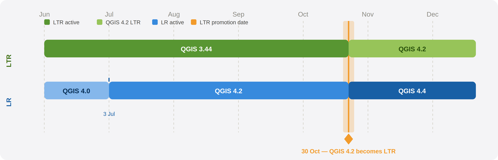
Circular
Arcs
- The 🌍 is spinning
- Since geos 3.13 basic curve support
- A new geos release 3.15 is around the corner
- With a new overlay engine that supports curves
We made it 😉🫡
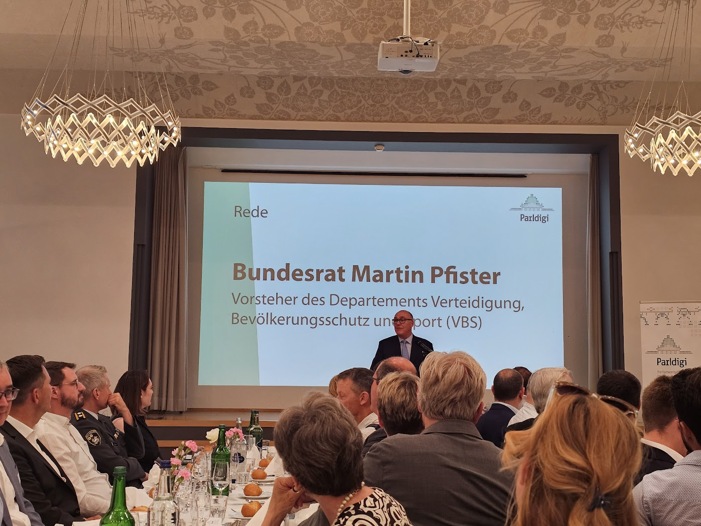
QGIS.org is Hiring
- New paid position for administration, office, …
- More capacity for community support, events, compliance, …
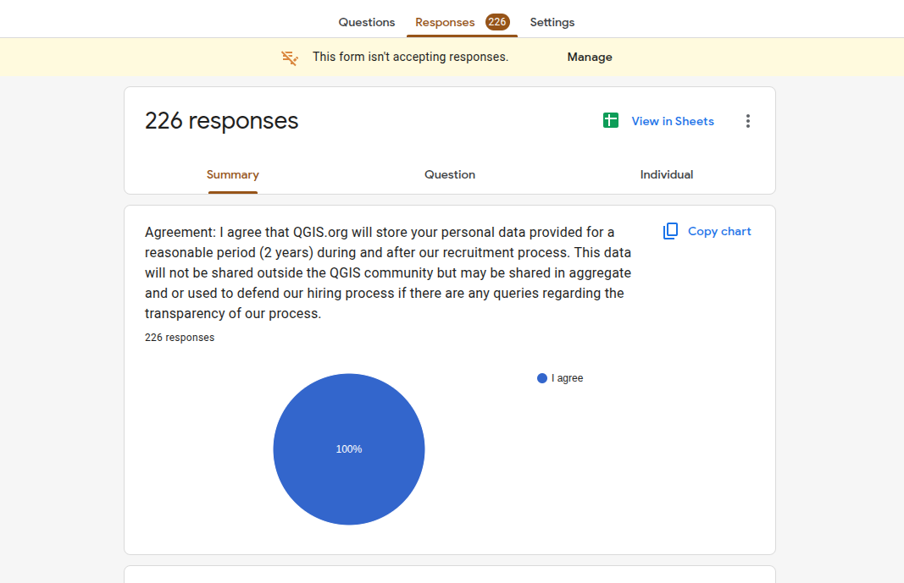
QGIS News Feed
Now Localized
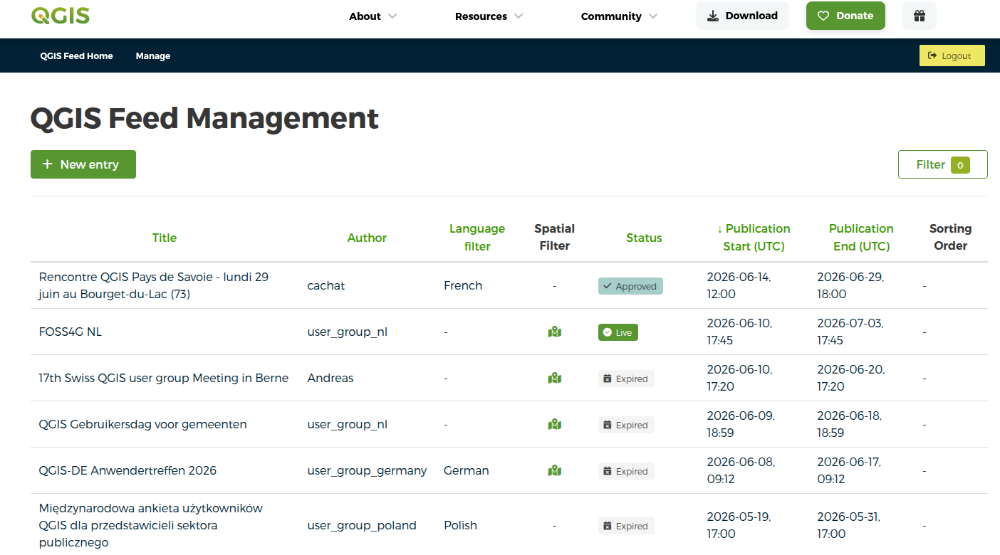
QGIS Website
Translatable Again
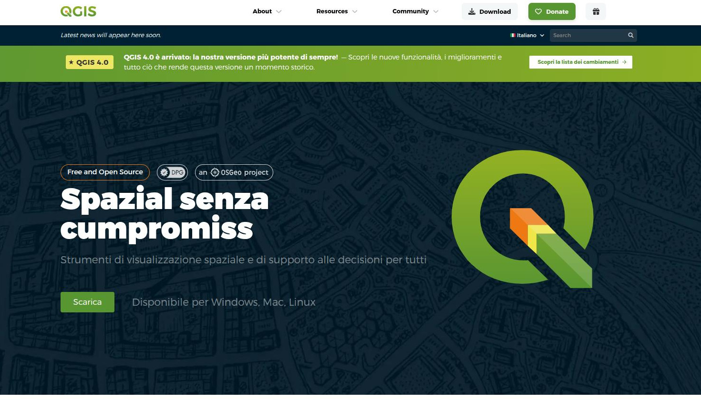
Attribute Table
Quo vadis?
- 60K Budget aside
- Major rework planned for QGIS 4.8 (possibly 4.6)
- Long-standing pain point finally being addressed
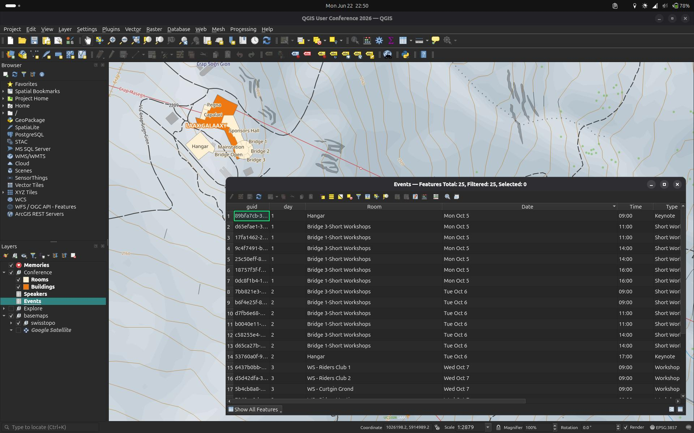
QField, From Laax with 💚
On-the-fly projects, COGO, NTRIP, & 3D
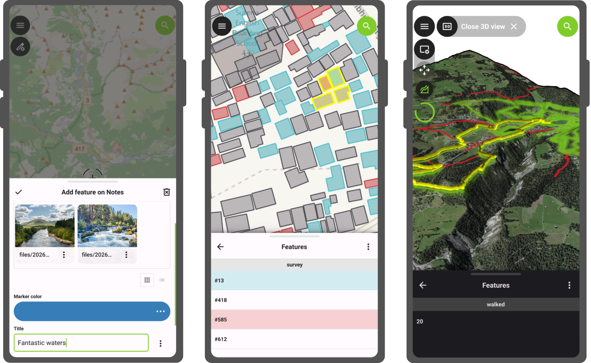
- Ongoing features and bugfixes
- QGIS 4 preparation underway in the background
QGIS User Conference
Laax 5-6.10.2026
- Tickets running out — register now!
- Talks, workshops, contributors meeting and outdoor activities
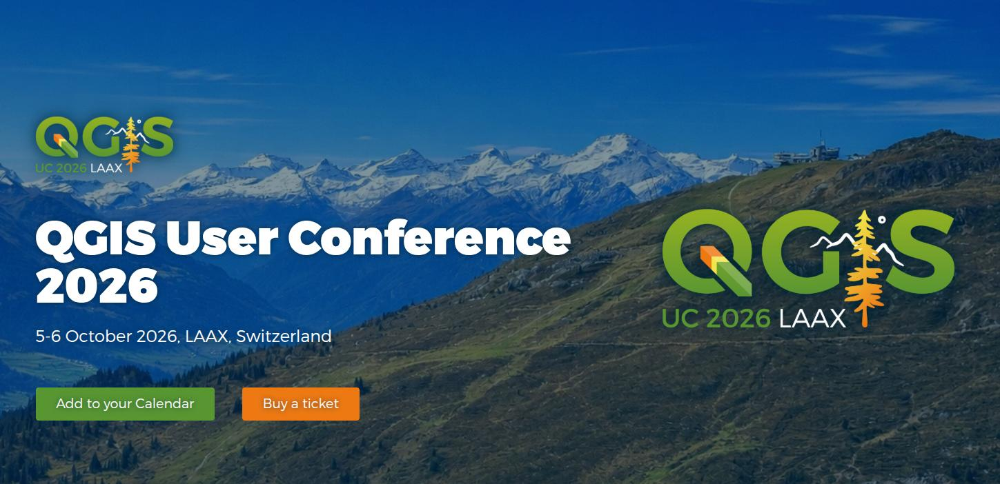
Thank you 🙏
Questions?
https://slides.opengis.ch/talk-qgis.org/qgis4